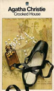
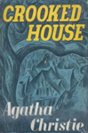
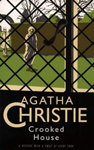
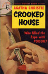
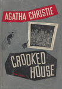
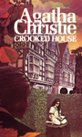
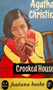
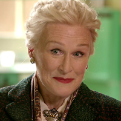

Crooked House is a work of detective fiction first published in the US by Dodd, Mead and Company in March 1949 and in the UK by the Collins Crime Club in May of the same year. The action takes place in and near London in the autumn of 1947. Christie said this and Ordeal by Innocence were her favourites amongst her own works. The title refers to a nursery rhyme ("There Was a Crooked Man"), a common theme of the author. It does not, however, feature the character of Miss Marple.







Screen Versions
The novel was adapted for BBC Radio 4 in four weekly 30-minute episodes which began broadcasting on 29 February 2008. It starred Rory Kinnear (Charles Hayward), Anna Maxwell Martin (Sophia Leonides), and Phil Davis (Chief Insp. Taverner). The radio play was dramatised by Joy Wilkinson and directed by Sam Hoyle. It was subsequently issued on CD. This version removed the character of Eustace.
In 2011, US filmmaker Neil La Bute announced that he would be directing a feature film version, for 2012, of the novel with a script by Julian Fellowes. On 15 May 2011, Gemma Arterton, Matthew Goode, Gabriel Byrne and Dame Julie Andrews were announced to lead the cast. In a report issued on 10 June 2012, Sony Pictures Worldwide Acquisitions acquired all rights in the US, Canada and internationally for the film, which could help secure it a lucrative release, though the cast and creative team had changed.
The film, directed by Gilles Paquet-Brenner and starring Christina Hendricks, Gillian Anderson, Max Irons, Glenn Close, Julian Sands, Terence Stamp, Stefanie Martini and Christian McKay, was released digitally on 21 November 2017 and first broadcast on Channel 5 on 17 December 2017. On 22 December 2017, it received a modest (16 theatres) theatrical release in the U.S. via Vertical Entertainment. In the film Sir Arthur Hayward is dead and Chief Inspector Tavener is in charge of the case.
